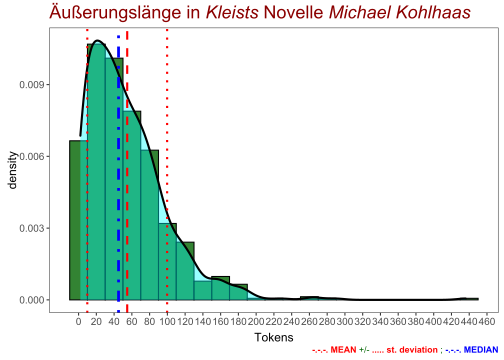

Kapitel 24 Komplexe Äußerungen
24.1 Packages
library(tidyverse)## Warning: package 'tidyverse' was built under R version 4.1.1## -- Attaching packages --------------------------------------- tidyverse 1.3.1 --## v ggplot2 3.3.5 v purrr 0.3.4
## v tibble 3.1.5 v dplyr 1.0.7
## v tidyr 1.1.4 v stringr 1.4.0
## v readr 2.0.2 v forcats 0.5.1## Warning: package 'tibble' was built under R version 4.1.1## Warning: package 'tidyr' was built under R version 4.1.1## Warning: package 'readr' was built under R version 4.1.1## Warning: package 'purrr' was built under R version 4.1.1## Warning: package 'dplyr' was built under R version 4.1.1## Warning: package 'stringr' was built under R version 4.1.1## Warning: package 'forcats' was built under R version 4.1.1## -- Conflicts ------------------------------------------ tidyverse_conflicts() --
## x dplyr::filter() masks stats::filter()
## x dplyr::lag() masks stats::lag()library(tidytext)## Warning: package 'tidytext' was built under R version 4.1.1library(readtext)
library(quanteda)## Warning: package 'quanteda' was built under R version 4.1.1## Package version: 3.1.0
## Unicode version: 13.0
## ICU version: 69.1## Parallel computing: 12 of 12 threads used.## See https://quanteda.io for tutorials and examples.library(quanteda.textstats)
library(quanteda.textplots)## Warning: package 'quanteda.textplots' was built under R version 4.1.1library(udpipe)
library(scales)## Warning: package 'scales' was built under R version 4.1.1##
## Attaching package: 'scales'## The following object is masked from 'package:purrr':
##
## discard## The following object is masked from 'package:readr':
##
## col_factor24.2 Text laden
kohlhaas <- read_lines(
"data/books/kleist/Kleist_Kohlhaas_Projekt_Gutenberg.txt")24.3 Text zerlegen
Wir erstellen ein Korpus, das aus einzelnen Äußerungen besteht.
kohlcrp <- corpus(kohlhaas)
kohlcorp <- corpus_reshape(kohlcrp, to = "sentences")24.4 Texttabelle erstellen
Das Äußerungskorpus wird in eine Tabelle umgewandelt.
kohltxt <- kohlcorp %>%
as_tibble(rownames = "doc_id") %>%
rename(text = value) %>%
mutate(text = as.character(text) %>% str_squish())Die Äußerungstatistik erhält ebenfalls Tabellenform.
kohlstats <- summary(kohlcorp, n = 803) %>%
as_tibble() %>%
rename(doc_id = Text)Nun können wir die beiden Tabellen vereinen, und zwar mit Hilfe der gemeinsamen Spalte “doc_id,” die wir vorher in beiden Einzeltabellen vorbereitet und entsprechend benannt haben. Außerdem filtern wir auch die leeren Zeilen (d.h. jene ohne Tokens) heraus. Von den 803 Zeilen bleiben 767 Zeilen übrig.
kohltab <- kohlstats %>%
full_join(kohltxt, by = "doc_id") %>%
filter(Tokens > 0)24.5 Speichern der Tabelle
write_csv(kohltab, "data/kohlhaas_tabelle.csv")24.6 Auswahl nach Länge
Die Tabelle wird zunächst mit der Funktion arrange() sortiert. Dann können wir die längsten Äußerungen auswählen und speichern.
kohltab %>% arrange(-Tokens) %>%
select(-Sentences) %>%
rmarkdown::paged_table()Die längste Äußerung enthält 437 Tokens (Interpunktionszeichen sind inbegriffen). Schauen wir uns mal diese Äußerung genauer an! Derartige Äußerungen mit mehreren Satzverbindungen vielen ineinander verschachtelten Nebensätzen nennt man eine Periode.
kohlhaas_periode1 <- kohltab %>%
filter(doc_id == "text64.9") %>%
pull(text)
write_lines(
kohlhaas_periode1, "data/kohlhaas_periode1.txt")Die zweitlängste Äußerung in der Novelle Michael Kohlhaas ist …
Noch eine Periode.
kohlhaas_periode2 <- kohltab %>%
filter(doc_id == "text62.16") %>%
pull(text)
write_lines(
kohlhaas_periode2, "data/kohlhaas_periode2.txt")Perioden über Perioden. Hier sind eigentlich zwei zu sehen. Unser Programm hat die Interpunktionsfolge Punkt + Bindestrich wahrscheinlich nicht als Ende der ersten Äußerung gewertet.
kohlhaas_periode3 <- kohltab %>%
filter(doc_id == "text22.11") %>%
pull(text)
write_lines(
kohlhaas_periode3, "data/kohlhaas_periode3.txt")Das ist eine der mittellangen Äußerungen im Kohlhaas.
kohlhaas_periode4 <- kohltab %>%
filter(doc_id == "text22.18") %>%
pull(text)
write_lines(
kohlhaas_periode4, "data/kohlhaas_periode4.txt")Suchen wir mal die mittellangen Äußerungen heraus! Zu diesem Zweck verändern wir unsere Filtermethode. Wir wählen alle Äußerungen, die 50 bis 60 Tokens lang sind. Unser Programm hat 70 Äußerungen von dieser Länge gefunden.
kohlhaas_utterances_50_60 <- kohltab %>%
filter(Tokens > 49 & Tokens < 61) %>%
pull(text)
write_lines(
kohlhaas_utterances_50_60, "data/kohlhaas_utterances_50_60.txt")Äußerungen mit 20 bis 30 Tokens.
kohlhaas_utterances_20_30 <- kohltab %>%
filter(Tokens > 19 & Tokens < 31) %>%
pull(text)
write_lines(
kohlhaas_utterances_20_30, "data/kohlhaas_utterances_20_30.txt")Äußerungen mit 30 bis 40 Tokens.
kohlhaas_utterances_30_40 <- kohltab %>%
filter(Tokens > 29 & Tokens < 41) %>%
pull(text)
write_lines(
kohlhaas_utterances_30_40, "data/kohlhaas_utterances_30_40.txt")24.7 Durchschnittslänge
Wie lang sind die Äußerungen im Durchschnitt? - Etwa 54,76 Tokens pro Äußerung.
kohl_mean <- kohltab %>%
summarise(median_laenge = median(Tokens) %>% round(2),
mittlere_laenge = mean(Tokens) %>% round(2),
sd_laenge = sd(Tokens) %>% round(2))
kohl_mean## # A tibble: 1 x 3
## median_laenge mittlere_laenge sd_laenge
## <dbl> <dbl> <dbl>
## 1 45 54.8 45.0Ist das viel? Das kann uns eigentlich nur ein Vergleich mit anderen Texten sagen.
Das Histogramm zeigt die Spannbreite und welche Äußerungslängen für die Novelle charakteristisch sind.
library(ggtext)## Warning: package 'ggtext' was built under R version 4.1.1kohltab %>%
ggplot(aes(Tokens)) +
geom_histogram(aes(y=..density..), binwidth = 20,
fill = "darkgreen", alpha = 0.8, color = "black") +
scale_x_continuous(breaks = seq(0,500,20)) +
# geom_freqpoly(binwidth = 20) +
geom_density(fill = "cyan", alpha = 0.4, size = 1) +
geom_vline(xintercept = kohl_mean$median_laenge,
color = "blue", lty = 4, size = 1.3) +
geom_vline(xintercept = kohl_mean$mittlere_laenge,
color = "red", lty = 2, size = 1) +
geom_vline(xintercept =
kohl_mean$mittlere_laenge + kohl_mean$sd_laenge,
color = "red", lty = 3, size = 1) +
geom_vline(xintercept =
kohl_mean$mittlere_laenge - kohl_mean$sd_laenge,
color = "red", lty = 3, size = 1) +
labs(title =
"Äußerungslänge in _Kleists_ Novelle _Michael Kohlhaas_",
caption =
"red = **mean** +/- **st.deviation**; blue = **median**") +
theme_bw() +
theme(plot.title=element_markdown(size=18, color = "darkred"),
plot.caption = element_markdown(color = "darkgreen"),
axis.title.y=element_text(size = 12, vjust=+0.2),
axis.title.x=element_text(size = 12, vjust=-0.2),
axis.text.y=element_text(size = 10),
axis.text.x=element_text(size = 10),
panel.grid.major = element_blank(),
panel.grid.minor = element_blank())
24.8 Auswahl nach Konnektoren
kohlhaas_utterances_aber1 <- kohltab %>%
filter(str_detect(text, "aber")) %>%
# filter(Tokens > 29 & Tokens < 41) %>%
pull(text)
write_lines(
kohlhaas_utterances_aber1, "data/kohlhaas_utterances_aber1.txt")24.9 Welche Konnektoren?
Die grammatische Analyse führen wir mit udpipe durch. Zuerst laden wir ein entsprechendes Sprachmodell.
library(udpipe)
destfile = "german-gsd-ud-2.5-191206.udpipe"
if(!file.exists(destfile)){
sprachmodell <- udpipe_download_model(language = "german")
udmodel_de <- udpipe_load_model(sprachmodell$file_model)
} else {
file_model = destfile
udmodel_de <- udpipe_load_model(file_model)
}Das Programm udpipe annotiert den Text mit Hilfe des Sprachmodells.
x <- udpipe_annotate(udmodel_de, x = kohlhaas, trace = FALSE)
k <- as.data.frame(x) %>%
mutate(doc_id = "kleist_kohlhaas")Nun sind wir in der Lage, Wortklassen zu zählen, die udpipe identifiziert hat. Dazu verwenden wir die Funktion count(). Gezählt werden die Kategorien in der Spalte upos.
k %>%
group_by(doc_id) %>%
count(upos, sort = TRUE) %>%
rmarkdown::paged_table()In der Spalte xpos interessieren uns nur die Kategorien CCONJ (Junktoren) und SCONJ (Subjunktoren). Deshalb filtern wir alle anderen Kategorien heraus.
k %>%
filter(upos == "CCONJ" | upos == "SCONJ") %>%
count(upos, sort = TRUE)## upos n
## 1 CCONJ 1232
## 2 SCONJ 1072Die Anzahl der Junktoren und Subjunktoren ist ziemlich ausgeglichen. Der Anteil der Nebensätze in Kleists Novelle scheint demnach höher zu sein in alltagssprachlichen Texten oder in modernen Zeitungstexten.
tabelle_cconj_sconj <- k %>%
filter(upos == "CCONJ" | upos == "SCONJ") %>%
mutate(lemma = str_remove(lemma, "[:PUNCT:]"),
lemma = str_to_lower(lemma),
token = str_remove(token, "[:PUNCT:]")) %>%
count(lemma, sort = TRUE)
tabelle_cconj_sconj %>% rmarkdown::paged_table()